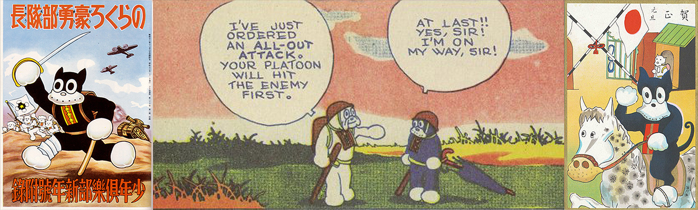
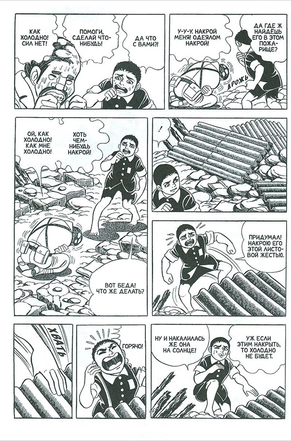
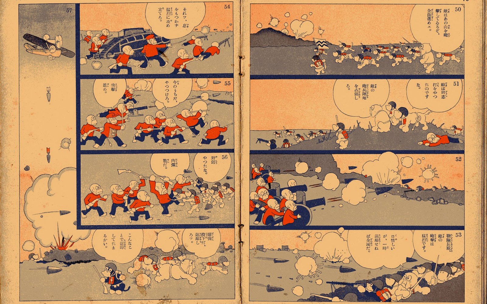
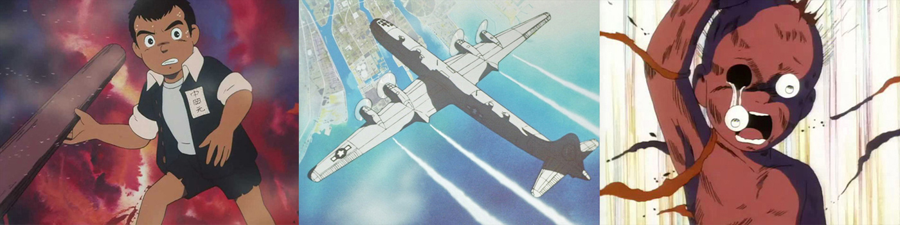

Доказательством тематической пестроты японских комиксов могут быть серии милитаристских и националистических манг. Их история начинается в 30-х годах ХХ века, а влияние до сих пор заметно в некоторых современных ксенофобских комиксах.
Проявления национализма связаны с литературой для молодежи — и с комиксами в особенности — относительно тесно, в чём нельзя не усмотреть определённую логику: мышление молодых людей легче поддаётся формированию и доступнее для идеологии, особенно если она проявляется в виде захватывающих историй и красивых картинок. Не случайно один из наиболее успешных японских журналов для молодежи того времени «Шоненсекай» (Мир мальчиков, 1895 – 1914) появился в 1895 году, когда Япония победила в японо-китайской войне. Первый номер, помимо прочего, содержал эссе, восхваляющие исторические военные успехи Японии и подчёркивающие важность текущего конфликта в Китае и роль молодых читателей как будущих защитников Японии. Похожую идеологию разделял и «Шоджосекай» (Мир девочек, 1906 – 1931), первый журнал для девочек, который, однако, делал чуть меньший акцент на раздувание боевых настроений и сосредотачивался скорее на образовании, что должно было помочь девочкам в ближайшем будущем стать идеалом японской женщины — рьёсаикенбо, или «хорошей женой, мудрой матерью», которая должна была рожать детей, прививать им любовь к родине и при этом мастерски справляться с семейными делами, чтобы муж-кормилец мог полностью сосредоточиться на строительстве сильного государства и на его охране. Излюбленным жанром здесь были истории или романы с «продолжением в следующем номере», прославляющие идеал японской доблести — яматодамашии.
Псы-герои и заводские рабочие
С приходом 30-х годов и наступлением эпохи милитаризма в журналах для молодёжи вновь разгорелась идеологическая пропаганда. В 1931 году, когда произошёл МаньчжурскийПодрыв железной дороги 18 сентября 1931 года около г. Шэньян. Это была провокация японской армии для последующего наступления на китайские позиции, послужившая началом захвата Маньчжурии и предвестием Второй мировой войны на Дальнем Востоке. инцидент, в журнале «Шоненкурабу» (Клуб мальчиков, 1914 – 1962) начала выходить легендарная серия комиксов «Норакуро» (1931 – 1941), где одноимённым героем был прелестный, хотя и слегка недалёкий песик, служащий в собачьей армии, которая по стечению обстоятельств как раз вела войну против армии поросят. Выбор вида животного для роли неприятеля определённо не был случайным, ведь поросёнок в японских карикатурах часто представлял Китай или его население. Несмотря на то, что автор комикса Суйхо Тагава в послевоенное время отрицал, что приключения Норакуро должны были быть аллегорией начинающегося военного конфликта между Китаем и Японией, его произведение до сих пор считается одним из популярнейших пропагандистских комиксов своей эпохи. Многие читатели позже признавали, что любимый герой вдохновил их на добровольное вступление в императорскую армию.

«Норакуро» (1931–1941), Суйхо Тагава
Что бы ни задумывал Тагава в действительности, его «Норакуро» был всего лишь слабым отваром по сравнению с пропагандистской мангой 40-х годов, когда Япония вступила в войну с США. Эта так называемая «ёкусан манга» должна была заменить обычные (понимай: фривольные) комиксы, и вместо предоставления неглубокого развлечения, воодушевляющего население в тяжёлые времена, стимулировать к большей продуктивности на поле битвы и в повседневной жизни. Но это оказалось трудновыполнимой задачей — в то время страна была ощутимо утомлена длительными военными конфликтами с Китаем и Россией, и гражданское население, которое было вынуждено отказаться от привычных развлечений и мелких радостей, не очень интересовалось приключениями героических заводских рабочих, трудящихся на 200 процентов.
Эра случайных обмолвок
Послевоенное время было для японских комиксов благоприятным. Военные истории и восхваление яматодамашии в них, разумеется, отсутствовали. Такие истории не пропускала цензура, да и не было высокого спроса: японское общество устало от многолетнего прославления народного боевого духа и склонялось в лучшем случае к пацифизму, в худшем же — к абсолютной апатии в отношении всех общественных дел. Только во второй половине 50-х годов на страницы журналов вернулись истории из военного времени, героями которых стали самые любимые военные — пилоты боевых самолётов. Эти серии были сосредоточены главным образом на романтических аспектах полёта, а идеологические элементы в них аккуратно обходились стороной. Начиная с 60-х годов выпускалось множество значимых комиксов, посвящённых описанию ужасов войны и критике отношений в императорской армии; всеми любимый автор хоррор-манги Мидзуки Сигэру в своём комиксе «Широигата» (Белый флаг) описал опыт дедовщины и жестокости, которую переживали рядовые пехотинцы в Азиатско-Тихоокеанском регионе. Тогда же появился ряд впечатляющих комиксов о трагедии в Хиросиме и Нагасаки: к наиболее важным из них относится легендарный комикс «Хадаси но Гэн» (Босоногий Гэн, 1973 ‒ 1985) — по большей части автобиографический комикс Кэйдзи Накадзавы, который лишился почти всей семьи в Хиросиме.

«Босоногий Гэн» (1973‒1985), Кэйдзи Накадзава
Все эти комиксы войну осуждали, критиковали фанатизм военных и политических элит и предостерегали о возможности его возвращения. Но несмотря на случайные обмолвки некоторых политических представителей или отдельные соседские разногласия касательно неразрешённых территориальных споров с Южной Кореей и Китаем, возвращение старых порядков вовсе не казалось правдоподобным. Япония 70‒80-х годов была состоятельной экономической сверхдержавой, которая, пережив послевоенный кризис национальной идентичности, нашла новую гордость вследствие собственной выносливости и старания, благодаря чему прошла путь от бедности к вершине. Любые комиксные проявления умеренного национализма и периодических антиамериканских вздрагиваний ограничивались спортивной мангой, где японские футболисты и боксёры весело побеждали превосходящих их ростом и силой соперников из команд других держав.

«Норакуро» (1931–1941), Суйхо Тагава
Ненавистное корейское течение
Такой довольно идиллический период не мог длиться вечно: перелом 80–90-х годов принёс сокрушительный экономический кризис, который значительно сказался на японском обществе. Кроме прочего, возросло число приверженцев правых экстремистских групп — уйокудантаи, — открыто придерживающихся довоенной идеологии. Одновременно стали громче голоса ревизионистов, требующих, например, выпуска новых учебников по истории, которые бы менее критично отражали военные преступления, допущенные Японией на протяжении пятнадцатилетнего военного конфликта. В дебатах на эту горячую тему чувствовали необходимость высказаться многие активные литераторы-интеллектуалы. В их числе был и автор комиксов Йошинори Кобаяши — член одной из ревизионистских групп, который в своём сборнике комиксов-эссе «Сенсорон» (О войне, 1998-2003) озвучил излюбленные экстремистские взгляды: отказ от принудительной вербовки корейских и китайских женщин в японские военные публичные дома, сомнительность официального количества жертв в нанкинской резне и т.п. Его аргументация и селективный отбор фактов были впоследствии подвергнуты критике многочисленных историков, а в некоторых японских университетах даже были организованы серии лекций, посвящённые разбору его произведений с целью опровергнуть содержащиеся в них утверждения.

Аниме-экранизация комикса «Босоногий Гэн» (1982, режиссёр Мори Масаки)
Голос Кобаяши не был единственным. В первом десятилетии нового тысячелетия появился целый ряд ксенофобских комиксов, выражающих ненависть к соседям Японии, прежде всего к Южной и Северной Корее. Этот факт обычно связывают с канрйю (или гарнйю) — корейским течением, заполонившим Японию на переломе тысячелетий, когда возрос интерес к продуктам корейской поп-культуры, а именно к романтическим телесериалам и музыке. Ксенофобские уйокудантаи ответили на этот феномен в нетерпимом духе, который идеально иллюстрирует печально известная манга «Кенканрйю» (Ненавидим канрйю, 2005), написанная автором, скрывающимся под псевдонимом Шарин Ямано. Главные герои комикса — группа студентов университета, которые по примеру Йошинори Кобаяши занимаются «открытием истин», связанных с разными событиями преимущественно периода Второй мировой войны и с изображением корейцев в роли лживых агрессоров, которые стремятся навязать Японии свою упадочную культуру.
«Кенканрйю» и другие спорные комиксы подобного толка в океане всевозможных манг всего лишь единичные явления, которые, естественно, не выдерживают сравнения с ксенофобским и шовинистическим характером многих довоенных журналов и комиксов для детей и молодежи. Но их существование и относительный успех на книжном рынке являются свидетельством как напряженной ситуации в обществе, так и неразрешённости многих международных неурядиц по причине недостаточной саморефлексии над ролью, которую сыграла Япония в первой половине ХХ века в Юго-Восточной Азии.